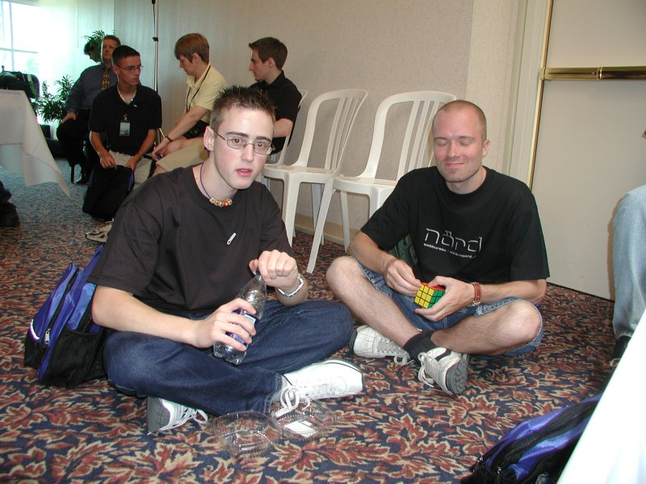

|
Picture Page 1
The timing pad. The contestants put both of their hands on the two circular yellow spots. Lifting them and putting them back turned the timer on and off. The display on the far right showed the readiness of the timer and the time itself.
The Saturday competition took place in this room. The small podium had four cube stands with four timers. The judging and scrambling committee is behind the podium.

The chief organizer Dan Gosbee. Always alert, right on spot, keeping a keen eye on everybody.

The Fewest Moves Challenge originator Dan Harris and Jess Bonde - the holder of the new World Record of 16.53 achieved in the second qualifying round.

David Allen, the winner of the 1982 US Nationals, had a very unique cubing style filled with incredibly fast finger shortcuts powered by both index fingers. I have never seen anybody twisting the cube so fast in a competition. David is using a corners-first system. He seemed to get better with pressure as opposed to most other cubers. David ended up on the 6th place.
Peter Jansen, the master of finger shortcuts and Ton Dennenbroek, the constructor of puzzles that are guaranteed to take your breath away. I came to the championship with a relatively new cube that was still pretty stiff. Ton greased it for me and I have to admit that he had done a great job! Thank you Ton :)
Masayuki Akimoto, the winner of speedsolving 4x4x4 (1:27.06) and 5x5x5 (2:39.62) cubes. Masayuki had developed a pretty unique system for solving the large cubes. And it looks like it is VERY effective, indeed!

Jaap Scherphuis (left) won the Rubik's Magic (3.06 sec), Rubik's Master Magic (8.22 sec), and Rubik's Clock (38.98 sec) competitions. On the right Jake Rueth.
Doug Li and Lars Vandenbergh. Lars won the Square 1 (41.80 sec) competition with a huge lead. He placed 4th in the 3x3x3 finals.
Wiktoria Zborowska (7 years old) solved the cube for the first time when she was 5y and 360 days old. This is a record that is not likely to be overcome for years! Not fearing the cameras and bright lights, she joined us on the stage.
Wictoria with her (very proud) father Zbigniew Zborowski. Zbigniew is a regular participant in the Fewest Moves Challenge and he is also developing new methods for solving the cube.
Ron van Bruchem is the fastest cuber of all times with his most recent average of 15.4 seconds (as of August 27, 2003). It is too bad the nerves slowed him down during the championship to the 8th place. Ron is by far the most dedicated cuber I have ever known.
|